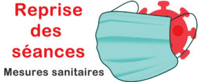

Mesures sanitaires – Covid19
Le cabinet d’hypnose du Pôle Albi Santé reprend de nouveau ses activités tout en assurant les mesures sanitaires strictes recommandées par le gouvernement.

Le pôle Albi Santé a mis en place les mesures sanitaires suivantes :
- La salle d’attente ne sera pas accessible. Les personnes ayant RDV devront attendre à l’extérieur que les praticiens viennent les chercher (Prévoyez de pouvoir rester dans votre véhicule en cas de pluie, téléphone allumé pour pouvoir être contacté le cas échéant.)
- Toute personne souhaitant accéder aux séances sera évaluée (température, symptômes visibles d’infection au covid19…). Toute personne présentant des signes suspects se verra refuser l’accès à la séance. Aucun accompagnant ne sera accepté pour limiter le nombre de personnes dans le cabinet.
- Chaque personne souhaitant venir en séance devra se munir d’un masque réglementaire. Prévoir un paquet de mouchoirs personnel pour votre séance.
- Les cabinets sont désinfectés et aérés pendant 15min entre chaque séance. La climatisation du pôle a été arrêtée pour cette période. Les fenêtres de chaque cabinet resteront entrouvertes durant la séance.
- Les gestes barrières sont appliqués de manière stricte durant la séance.
- Pour les paiements par chèque, prévoyez votre propre stylo.
Merci de votre compréhension et de votre implication.
M. AMMAR